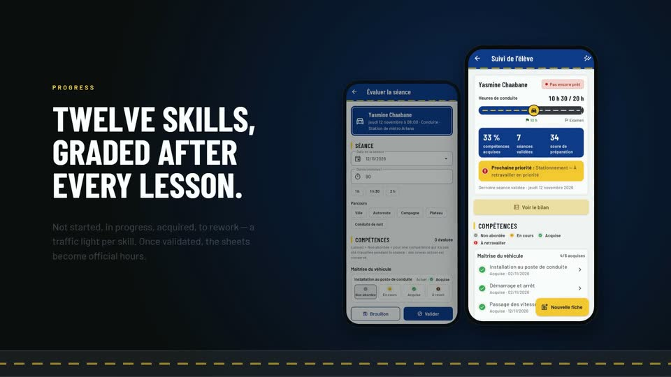
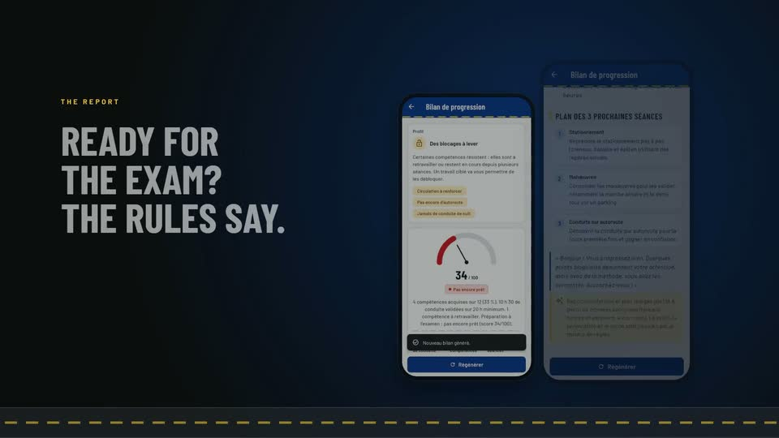
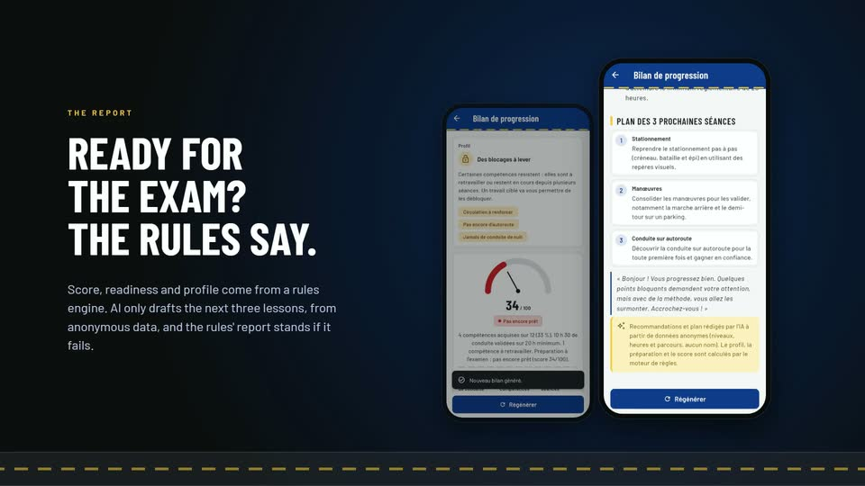
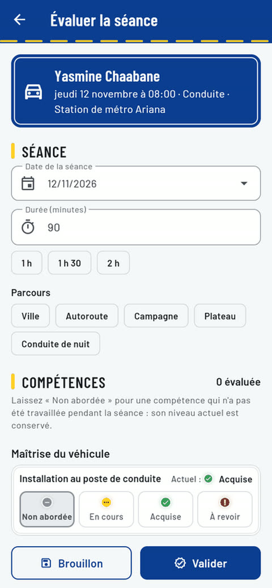
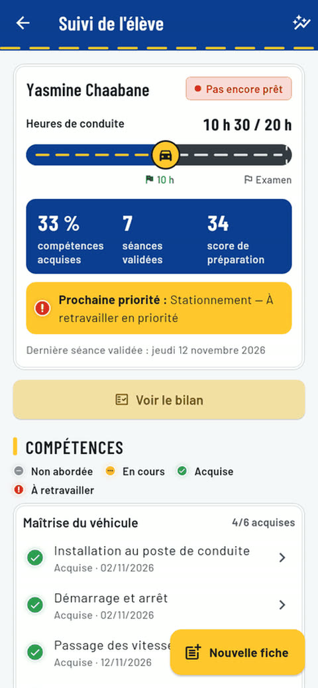
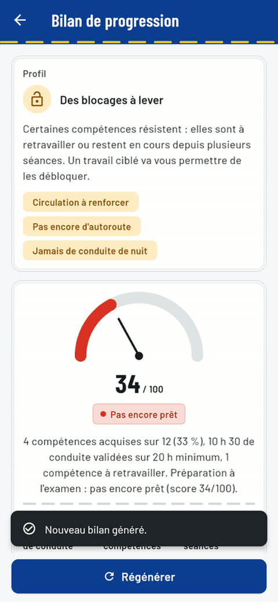
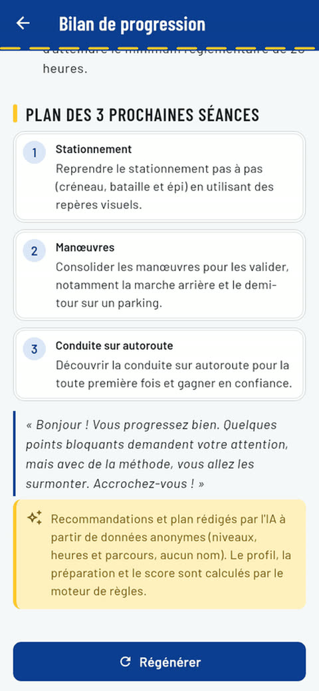
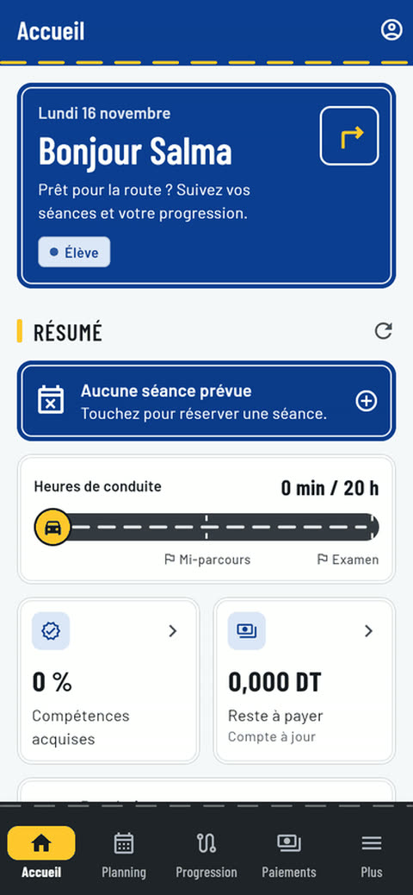

Auto-École
A driving school in one app — student, instructor and office — where a student's progress is replayed from the lesson sheets, never stored twice.
Overview
A driving school in one app — for the student, the instructor and the office — built as a university project by a team of six; I worked across all six modules. Flutter for Android and the web, over a Spring Boot 4.1 API and PostgreSQL. Students register with an e-mail code and book lessons that can never overlap; instructors grade twelve skills after every lesson on a traffic-light scale; exam files move from eligibility to a PDF summons and a timed 30-question theory quiz; billing covers packages, numbered invoices and audited refunds. Progress is never stored twice: official hours, each skill's current level and the progress curve are replayed from the validated session sheets on every read, so one corrected sheet changes them everywhere. The readiness score and the student's profile come from a rules engine; AI only drafts the next three lessons, from anonymous data. 40 tables over 11 Flyway migrations, 115 Java and 79 Flutter test files.
Problem and objectives
A driving school juggles bookings, lesson feedback, exam files and payments across paper and spreadsheets. Auto-École puts the student, the instructor and the office on the same records.
- Lessons booked without overlaps, and graded skill by skill afterwards
- Exam readiness decided by rules a student can read
- Six modules that can change without reaching into each other's tables
Architecture
App
Flutter · Android and web
Three spaces by role: student, instructor, office.
- App Flutter · Android and web — Three spaces by role: student, instructor, office.
- API Spring Boot 4.1 · Spring Security · JWT — Client IP read from the right of X-Forwarded-For, never the left.
- Six modules users · planning · progress · exams · billing · communication — They reach each other through query interfaces, never through each other's tables.
- Rules engine readiness · profile — Score, readiness and the student profile; AI only drafts the next three lessons, from anonymous data.
- PostgreSQL Flyway · 40 tables — Hours and levels are replayed from validated sheets on every read.
- AI, optional Gemini or Claude — A JSON plan that is validated; if it fails, the rules report stands.
Engineering challenges and decisions
- Hours, skill levels and the curve replayed from validated sheets on every read — nothing stored twice
- Readiness score and profile from a rules engine; AI drafts only the plan, from anonymous data
- Six modules that reach each other through query interfaces, never through each other's tables
- Free hosting across Vercel, Render and Neon; client IP read from the right of X-Forwarded-For
Replay, don't store
- The constraint
- Instructors fill a session sheet after every driving lesson, the office can correct any sheet later, and the exam and billing modules read the result.
- What I rejected
- Keeping hours and skill levels as columns updated on save.
- What I did
- Nothing is stored twice: official hours, each skill's current level and the progress curve are replayed from the validated sheets on every read, so one corrected sheet changes them everywhere at once.
- What it cost
- Every read walks the student's whole history instead of reading one row.
Technologies
Also in use: JUnit 5, flutter_test, Vercel, Render, Neon, JWT, Gemini API.
My contribution
University project by a team of six; I worked across all six modules.
Screens
Stills from the demo film, then screens captured from the running app.








Results
- 40
- tables over 11 Flyway migrations
- 115
- Java test files
- 79
- Flutter test files
- 3
- free hosts: Vercel for the web app, Render for the API, Neon for the database